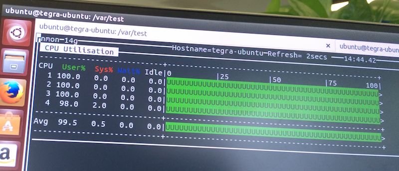

<html>

<head>
  <meta charset="utf-8">
  <meta http-equiv="X-UA-Compatible" content="IE=edge">
  <meta name="viewport" content="width=device-width, initial-scale=1">
  <meta name="description" content="TingGe Blog Agile agile JavaScript NodeJS">
  <meta name="author" content="TingGe<505253293@163.com>">
  <title>听歌实验室</title>
  <link type="image/x-icon" rel="shortcut icon" href="https://avatars3.githubusercontent.com/u/4074517?v=3&s=40" />
  <link rel="stylesheet" type="text/css" href="/lib/bootstrap/dist/css/bootstrap.min.css" media="screen">
  <link href="https://fonts.googleapis.com/css?family=Lato:300,400,700,300italic,400italic,700italic" rel="stylesheet" type="text/css">
  <link href="/css/landing-page.css" rel="stylesheet">
  <link href="/css/screenshots.css" rel="stylesheet">
  <style media="screen">
    #main {
      padding-top: 55px;
    }
  </style>
  <script type="text/javascript" src="/lib/jquery/dist/jquery.min.js"></script>
  <script type="text/javascript" src="/lib/html2canvas/dist/html2canvas.min.js"></script>
  <!-- HTML5 Shim and Respond.js IE8 support of HTML5 elements and media queries -->
  <!-- WARNING: Respond.js doesn't work if you view the page via file:// -->
  <!--[if lt IE 9]>
        <script src="https://oss.maxcdn.com/libs/html5shiv/3.7.0/html5shiv.js"></script>
        <script src="https://oss.maxcdn.com/libs/respond.js/1.4.2/respond.min.js"></script>
    <![endif]-->
</head>

<body>
  <!-- Navigation -->
  <nav class="navbar navbar-default navbar-fixed-top topnav" role="navigation">
    <div class="container topnav">
      <!-- Brand and toggle get grouped for better mobile display -->
      <div class="navbar-header">
        <button type="button" class="navbar-toggle" data-toggle="collapse" data-target="#bs-example-navbar-collapse-1">
          <span class="sr-only">Toggle navigation</span>
          <span class="icon-bar"></span>
          <span class="icon-bar"></span>
          <span class="icon-bar"></span>
        </button>
        <a class="navbar-brand topnav" href="/">
          <i class="fa fa-flask icon-3x" aria-hidden="true"></i> 听歌实验室
        </a>
      </div>
      <!-- Collect the nav links, forms, and other content for toggling -->
      <div class="collapse navbar-collapse" id="bs-example-navbar-collapse-1">
        <ul class="nav navbar-nav navbar-right">
          <li>
            <a href="/html/js.html">JavaScript/NodeJS</a>
          </li>
          <li>
            <a href="/index.html#agile">敏捷/项目管理(Agile/PMP)</a>
          </li>
          <li>
            <a href="/html/cloud-bi.html">云商业智能(Cloud BI)</a>
          </li>
          <li>
            <a href="/html/iot.html">物联网(WoT/IoT)</a>
          </li>
          <li>
            <a href="/html/me.html">关于我</a>
          </li>
        </ul>
      </div>
      <!-- /.navbar-collapse -->
    </div>
    <!-- /.container -->
  </nav>
  <div id="main" class="container">
    <div class="row">
      <div id="article" class="col-md-9 content-container">
        <h1 id="linux-stress">Linux 压力测试 stress</h1>
<p>[TOC]</p>
<p>Stress是一个Posix系统下 Cpu/Menory/IO/Disk 压测工具。</p>
<p>以 Nvidia Jetson TK1、Ubuntu 14.04、<a href="http://people.seas.harvard.edu/~apw/stress/stress-1.0.4.tar.gz"><strong>stress-1.0.4.tar.gz</strong></a> 环境为例，检测开发板 CPU 在 100% 情况下的温度。</p>
<p>建议 root 或 sudo 执行：</p>
<h2 id="-cpu-">压测并测量 CPU 温度</h2>
<h3 id="-">准备</h3>
<p>需运行良好的 Nvidia Jetson TK1 和 红外测温仪。</p>
<p></p>
<h3 id="-">安装</h3>
<ol>
<li><p>下载 <a href="http://people.seas.harvard.edu/~apw/stress/">stress</a>。</p>
</li>
<li><p>将 stress-1.0.4.tar.gz 复制到 <code>／usr/local/src</code> 目录下</p>
</li>
<li><p>执行以下命令</p>
<pre><code class="lang-shell">cd /usr/local/src
tar -xzpvf stress-1.0.4.tar.gz
cd stress-1.0.4
./configure
make
make check
make install
make clean
</code></pre>
</li>
</ol>
<h3 id="-">执行压测</h3>
<ol>
<li><p>创建测试目录</p>
<pre><code class="lang-shell">cd /var
mkdir test
cd test
</code></pre>
</li>
<li><p>执行压测（产生4个进程，每个进程都反复不停计算由 rand() 产生随机数的平方根）</p>
<pre><code class="lang-shell">stress -c 4
</code></pre>
</li>
</ol>
<h3 id="-cpu-">查看 CPU 情况</h3>
<p>通常 <code>top</code> 命令即可，但非常建议用 <code>nmon</code> 或  <code>htop</code>。</p>
<ol>
<li><p>同时按 <code>Ctrl ＋ Shift ＋ T</code> ，打开新 Terminal 选项卡</p>
</li>
<li><p>执行<code>nmon</code>命令后，按 <code>c</code>，查看 CPU 占用</p>
<p></p>
</li>
</ol>
<h3 id="-cpu-">测量板子CPU模块温度</h3>
<ol>
<li>持续压测约 10 分钟</li>
<li>用红外温度测量仪获取 CPU 温度</li>
</ol>
<h2 id="-">其它</h2>
<h3 id="-">磁盘占满问题</h3>
<ol>
<li><p><code>df</code>命令，查看 <code>/var</code> 是否已满，如磁盘已满 “stress” 会报错并终止。</p>
</li>
<li><p>清空测试目录并重新运行</p>
<pre><code class="lang-shell">cd
chmod -R 755 /var/test
rm -R -f /var/test/
cd /var/test/
stress -c 4
</code></pre>
</li>
</ol>
<h3 id="-stress">卸载 stress</h3>
<p>执行以下命令清理 stress</p>
<pre><code class="lang-shell">rm -R -f /usr/local/src/stress-1.0.4
rm -f /usr/local/bin/stress
rm -f /usr/local/src/stress-1.0.4.tar.gz
</code></pre>
<h3 id="stress-">stress 常用参数解析</h3>
<p> <code>stress -?</code> 查看参数</p>
<ul>
<li>-t ：指定运行N秒后停止</li>
<li>-c：产生n个进程 每个进程都反复不停的计算随机数的平方根</li>
<li>-i：产生n个进程，每个进程反复调用sync()，sync()用于将内存上的内容写到硬盘上</li>
<li>-m：产生n个进程，每个进程不断调用内存分配malloc和内存释放free函数</li>
<li>-d：产生n个执行write和unlink函数的进程</li>
</ul>
<h4 id="-">示例</h4>
<p>产生8个cpu进程、4个io进程、2个128M的malloc()/free()进程，1分钟后停止运行</p>
<pre><code class="lang-shell">stress -c 8 -i 4 -m 2 --vm-bytes 128M -t 1m
</code></pre>
<ul>
<li>测试硬盘，通过mkstemp()将 1GB 大小的文件写入当前目录，并执行 unlink() 清除。注： <code>--hdd-bytes</code> 默认是 1GB</li>
</ul>
<pre><code class="lang-shell">stress -d 1
</code></pre>
<h3 id="-cpu-2320500-">锁定 CPU 频率至最高(2320500)</h3>
<ol>
<li><p>锁频</p>
<pre><code class="lang-shell">### Maximize CPU performance
echo 0 &gt; /sys/devices/system/cpu/cpuquiet/tegra_cpuquiet/enable
echo 1 &gt; /sys/devices/system/cpu/cpu0/online
echo 1 &gt; /sys/devices/system/cpu/cpu1/online
echo 1 &gt; /sys/devices/system/cpu/cpu2/online
echo 1 &gt; /sys/devices/system/cpu/cpu3/online
echo performance &gt; /sys/devices/system/cpu/cpu0/cpufreq/scaling_governor
</code></pre>
</li>
<li><p>在 home 目录创建 cpu_freq.sh</p>
<pre><code class="lang-shell">cd ~
vim cpu_freq.sh
</code></pre>
<p>内容：</p>
<pre><code class="lang-shell">echo &quot;cpu0&quot;
cat /sys/devices/system/cpu/cpu0/cpufreq/cpuinfo_max_freq
echo &quot;cpu1&quot;
cat /sys/devices/system/cpu/cpu1/cpufreq/cpuinfo_max_freq
echo &quot;cpu2&quot;
cat /sys/devices/system/cpu/cpu2/cpufreq/cpuinfo_max_freq
echo &quot;cpu3&quot;
cat /sys/devices/system/cpu/cpu3/cpufreq/cpuinfo_max_freq
</code></pre>
</li>
<li><p><code>:x</code> 保存后，更改  cpu_freq.sh 权限</p>
<pre><code class="lang-shell">sudo chmod +x cpu_freq.sh
</code></pre>
</li>
<li><p>查看 cpu 频率</p>
<pre><code class="lang-shell">./cpu_freq.sh // 或 watch ./cpu_freq.sh
</code></pre>
</li>
</ol>
<h3 id="gpu-">GPU 相关</h3>
<pre><code class="lang-shell">### GPU performance
echo 852000000 &gt; /sys/kernel/debug/clock/override.gbus/rate
echo 1 &gt; /sys/kernel/debug/clock/override.gbus/state

### GPU memory clock
echo 924000000 &gt; /sys/kernel/debug/clock/override.emc/rate
echo 1 &gt; /sys/kernel/debug/clock/override.emc/state
</code></pre>
<h2 id="-">参考</h2>
<ol>
<li><a href="http://blog.sina.com.cn/s/blog_5f50a4c80101pdik.html">linux压力测试软件stress命令操作与使用指南</a></li>
<li><a href="http://www.weixinduba.com/n/133741">Linux压力测试软件Stress使用指南</a></li>
<li><a href="http://www.cnblogs.com/javaee6/p/4642744.html">linux压力测试工具stress</a></li>
<li><a href="https://devtalk.nvidia.com/default/topic/886502/l4t-21-4-jetson-maximizing-cpu-performance-in-rc-local-scaling_governor-is-not-setting/">L4T 21.4 Jetson - Maximizing CPU performance in rc.local - scaling_governor is not setting</a></li>
</ol>

      </div>
      <div class="col-md-3" style="padding-top:20px;">
        <iframe src="http://githubbadge.appspot.com/tingge?a=0" style="border: 0;height: 142px;width: 200px;overflow: hidden;" frameBorder="0"></iframe>
      </div>
    </div>
  </div>
  <a id="html2canvas" title="截图下载-快照">&nbsp;</a>
  <script src="/lib/bootstrap/dist/js/bootstrap.min.js"></script>
  <script src="/js/article.js" charset="utf-8"></script>
  <!-- justice.js https://github.com/okor/justice  -->
  <script src="/lib/justice.min.js" charset="utf-8"></script>
  <!-- instantclick -->
  <script src="/lib/instantclick.js" charset="utf-8"></script>
  <script type="text/javascript" data-no-instant>
    Justice.init();
  </script>
</body>

</html>
